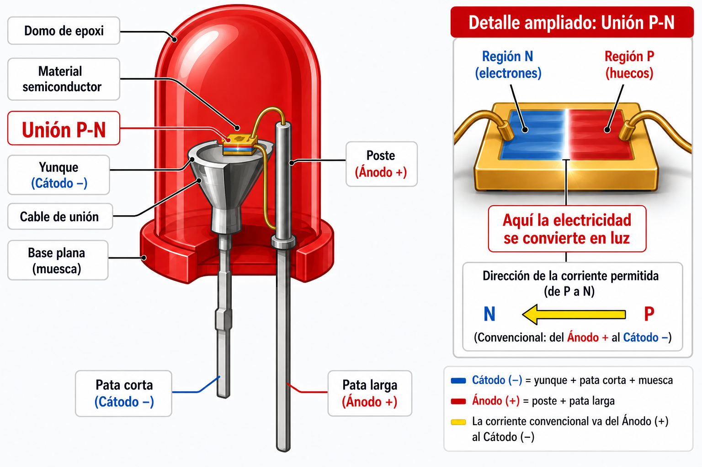
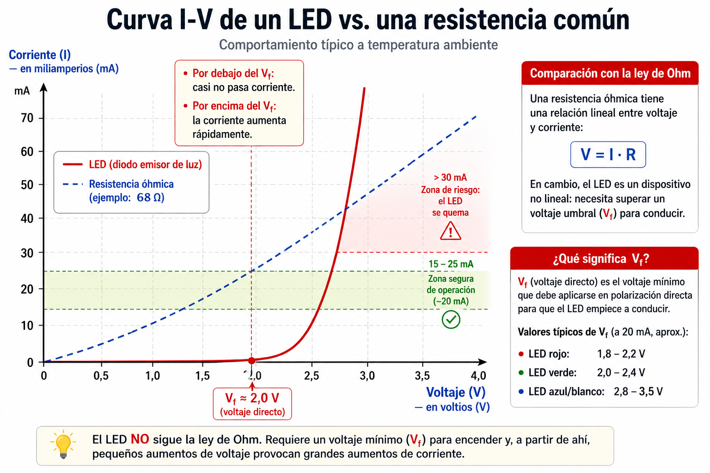
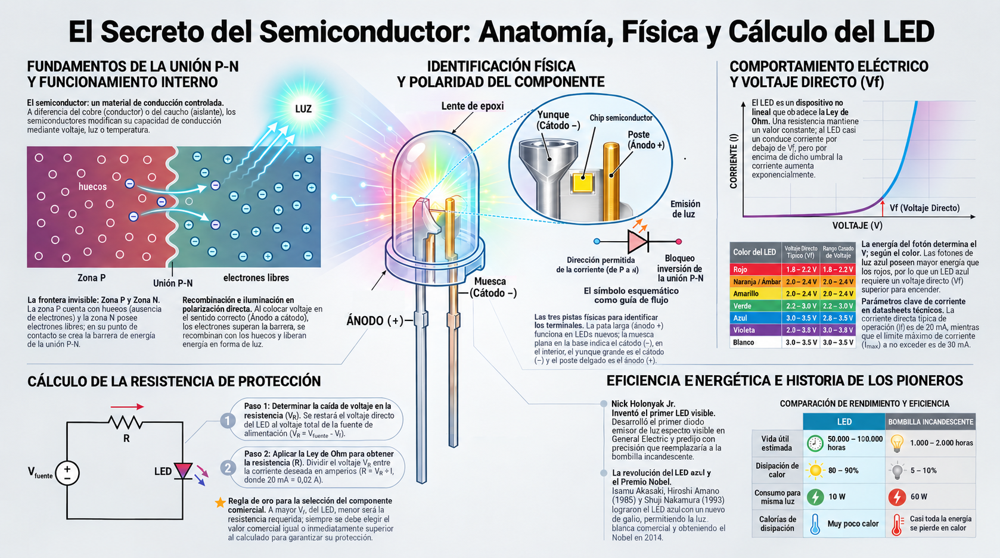

⚛️ El secreto del semiconductor
⚛️ Un material que no es ni conductor ni aislante
Los conductores como el cobre dejan pasar la carga con facilidad. Los aislantes como el caucho la bloquean. Pero existe un tercer tipo de material, los semiconductores (como el silicio y el germanio), que no son ni lo uno ni lo otro: su comportamiento se puede controlar con voltaje, luz o temperatura.
Los LEDs están hechos de semiconductores. Y esa es la clave de todo: en lugar de conducir siempre (como el cobre) o nunca (como el caucho), los semiconductores pueden conducir solo en ciertas condiciones. De ahí nace la "puerta de un solo sentido".
💡 Idea clave: los LEDs, los diodos, los transistores y los chips que entrenan modelos de inteligencia artificial están hechos del mismo tipo de material semiconductor. Entender cómo se comporta un semiconductor es entender el material del que están hechas las computadoras modernas.
🔬 La unión P-N: la frontera invisible
Un LED está formado por la unión de dos zonas de semiconductor con propiedades opuestas:
- La zona P (positiva): un semiconductor al que se le han agregado impurezas que crean "huecos", espacios donde faltan electrones.
- La zona N (negativa): un semiconductor al que se le han agregado impurezas que aportan electrones libres.
En la frontera entre las dos zonas se forma una unión P-N. Esta unión actúa como una "barrera de energía": los electrones de la zona N quieren pasar a la zona P, pero encuentran una barrera que se los impide.
Cuando conectas el LED en la dirección correcta, la fuente empuja a los electrones con suficiente fuerza para superar la barrera. Los electrones cruzan la unión, se recombinan con los huecos, y en ese proceso liberan energía... en forma de luz.
Cuando lo conectas al revés, la fuente empuja los electrones en sentido contrario, y la barrera se vuelve aún más alta. La corriente no puede pasar. El LED queda apagado.

⚡ El voltaje directo (Vf)
Para superar la barrera de energía de la unión P-N, hace falta una cantidad mínima de voltaje. Ese voltaje se llama voltaje directo (Vf, del inglés forward voltage). Sin él, el LED no enciende, sin importar cuánta corriente le ofrezcas.
El Vf depende del color del LED, porque cada color tiene una energía distinta. Los LEDs rojos necesitan menos voltaje que los azules o los blancos.
| Color del LED | Vf típico | Rango común |
|---|---|---|
| Rojo | ~2.0 V | 1.8 – 2.2 V |
| Naranja / Ámbar | ~2.1 V | 2.0 – 2.2 V |
| Amarillo | ~2.2 V | 2.0 – 2.4 V |
| Verde | ~2.4 V | 2.2 – 3.0 V |
| Azul | ~3.0 V | 2.8 – 3.5 V |
| Violeta | ~3.3 V | 3.0 – 3.6 V |
| Blanco | ~3.2 V | 3.0 – 3.5 V |
💡 ¿Por qué varía con el color? El color de la luz depende de la energía del fotón que se libera. Los fotones azules tienen más energía que los rojos. Por eso los LEDs azules necesitan más voltaje para encender. El Vf es, literalmente, la energía del fotón expresada en voltios.
⚡ ¿Y la corriente? El Vf no es lo único que importa. El LED también necesita una corriente mínima para brillar con claridad. Por debajo de aproximadamente 5 mA, el LED está encendido pero muy tenue, casi imperceptible. Y por encima de 30 mA, el LED se sobrecalienta y puede quemarse. Las hojas de datos (en inglés, datasheets) siempre indican un rango seguro: la corriente recomendada (típicamente 20 mA) y la corriente máxima (típicamente 30 mA). Los ingenieros diseñan siempre con un margen de seguridad.
📈 La curva I-V: una imagen vale más que mil palabras
El LED tiene un comportamiento muy distinto al de una resistencia común. La siguiente gráfica muestra la diferencia:

⚠️ Una aclaración importante: el LED no es un componente óhmico. Es decir, no sigue la ley de Ohm como una resistencia común. Una resistencia de 100 Ω siempre tiene 100 Ω, sin importar el voltaje que le apliques. Pero el LED cambia su comportamiento según el voltaje: por debajo del Vf casi no pasa corriente, y por encima del Vf la corriente aumenta muy rápidamente.
Por eso, cuando calculamos la resistencia de protección, no estamos calculando la resistencia del LED, sino la del componente externo que lo acompaña. El LED tiene su propio comportamiento, que se describe mejor con la curva I-V que con un valor único de resistencia.
🧮 Cómo calcular la resistencia con el Vf conocido
Ahora que conocemos el Vf de cada LED, podemos calcular la resistencia que necesita para protegerse. El cálculo se basa en la ley de Ohm: primero se obtiene el voltaje que debe caer en la resistencia y luego se divide entre la corriente deseada.
📌 Ejemplo 1: LED rojo
- Fuente: 5V
- LED rojo: Vf = 2.0 V
- Corriente deseada: 20 mA = 0,02 A
Paso 1 — ¿Cuánto voltaje debe caer en la resistencia?
Paso 2 — Aplicar la ley de Ohm
El valor comercial más cercano es 150 Ω (si no lo encuentras, puedes usar 180 Ω). Usar 220 Ω haría que el LED brille bastante menos, aunque sigue siendo seguro.
📌 Ejemplo 2: LED azul
- Fuente: 5V
- LED azul: Vf = 3.0 V
- Corriente deseada: 20 mA = 0,02 A
Paso 1 — Voltaje para la resistencia:
Paso 2 — Resistencia:
El valor comercial más cercano por encima es 100 Ω (existe en las tiendas). Observa: el LED azul necesita menos resistencia que el rojo, porque su Vf es más alto y deja menos voltaje para la resistencia.
🎯 Regla de oro: cuanto más alto el Vf del LED, menos voltaje queda para la resistencia, y por lo tanto menor debe ser su valor. Siempre se elige el valor comercial igual o mayor al calculado.
⏳ ¿Por qué el LED reemplazó a la bombilla?
Los LEDs no solo son más eficientes que las bombillas incandescentes: también duran muchísimo más. Y eso, en un mundo donde la energía importa, marca una diferencia enorme.
| Característica | LED | Bombilla incandescente |
|---|---|---|
| Vida útil | 50.000 – 100.000 horas | 1.000 – 2.000 horas |
| Eficiencia (luz/energía) | 40–60% | 5 – 10% |
| Consumo para misma luz | 10 W | 60 W |
| Calor disipado | Muy poco | Mucho (casi todo es calor) |
Un LED dura hasta 100 veces más que una bombilla y consume 8 veces menos para dar la misma luz. Esa es la razón por la que hoy todo funciona con LEDs: semáforos, pantallas, linternas, luces de las casas, y hasta las pantallas gigantes de los centros de datos.
🌐 El LED y la fibra óptica: una alianza para la IA
En las redes modernas, el cable de cobre empieza a quedarse corto: a distancias muy largas, las señales se degradan y el ancho de banda se satura. Por eso los centros de datos están reemplazando el cobre por fibra óptica: hilos de vidrio que transportan datos como pulsos de luz generados por LEDs o láseres.
La fibra permite conectar muchos más chips y mover más información. Es la razón por la que una IA en un centro de datos puede hablar con miles de usuarios al mismo tiempo. Pero la fibra también tiene costos: los transceptores ópticos consumen energía de manera constante, incluso cuando no están transmitiendo datos. Es un ejemplo de que toda tecnología tiene ventajas y desventajas. La ingeniería consiste en elegir el mejor equilibrio.
🔍 Taller: Midiendo el Vf con el multímetro
En esta versión del taller vas a usar el modo diodo del multímetro para medir directamente el Vf de cada LED. Así podrás comparar los valores reales con los que aparecen en la tabla de colores.

🧰 Materiales
- Cuatro o cinco LEDs de distintos colores (rojo, verde, azul, blanco).
- Un multímetro con modo diodo.
- Una pila de 3V (CR2032) con su portapilas.
- Una resistencia de 220 Ω o 330 Ω.
- Cables caimán (o cables comunes).
- Cinta adhesiva (de papel o negra aislante), para sostener las patas y los cables si es necesario.
🛠️ Procedimiento
- Identifica la polaridad con las tres pistas. Antes de medir, anota en tu bitácora qué crees que es cada pata (ánodo o cátodo).
- Gira la perilla del multímetro al modo diodo (símbolo de un triángulo con una barra, parecido al símbolo del LED).
- Mide el Vf. Toca con la punta roja el ánodo (pata larga o la que crees que es positiva) y con la punta negra el cátodo. Si el LED enciende débilmente y el multímetro muestra un valor entre 1.5 V y 3.5 V, esa es la dirección correcta.
-
💡 Nota importante: el multímetro en modo diodo envía una corriente muy pequeña (del orden de 1 mA). A veces el LED no enciende visiblemente durante la medición, pero el multímetro igual muestra el Vf. No te preocupes: eso es normal. Confía en el número que aparece en la pantalla, no en el brillo del LED.
- Anota el valor que muestra el multímetro en tu bitácora.
- Invierte las puntas. ¿Qué muestra el multímetro ahora? (Debería mostrar un valor muy alto o ‘OL’, indicando que la corriente no puede pasar.)
-
Repite con todos los LEDs y completa la siguiente
tabla:
LED Color Vf medido Vf tabla ¿Coincide? 1 ☐ Sí / ☐ No 2 ☐ Sí / ☐ No 3 ☐ Sí / ☐ No 4 ☐ Sí / ☐ No
🔍 ¿Qué descubriste? ¿Los Vf medidos coinciden con los valores de la tabla? Si hay pequeñas diferencias (0.1V o 0.2V), es normal: los LEDs reales varían de un fabricante a otro. Si hay diferencias grandes, revisa si estás midiendo bien la polaridad.
❓ Pregunta guía
El Vf del LED azul es más alto que el del rojo. ¿Qué implica eso para la energía del fotón que se libera? ¿Qué color de luz tiene más energía?
⚠️ Seguridad: trabaja siempre con 3V o 5V. Nunca uses voltajes de pared (110V o 220V). Siempre usa la resistencia de protección cuando montes el circuito con la pila.
📜 Cuatro científicos, una luz
El LED que hoy ilumina tu pantalla no lo inventó una sola persona. Fueron cuatro científicos, en tres países, durante casi treinta años. Cada uno aportó una pieza, y cada uno enfrentó obstáculos que casi los detienen.
💡 Nick Holonyak Jr. (1928–2022) — El inventor ridiculizado
Holonyak inventó el primer LED visible en 1962, mientras trabajaba en General Electric. Era hijo de inmigrantes ucranianos y creció en una familia humilde. Cuando presentó su invento, muchos colegas se rieron: decían que el LED era un "juguete de laboratorio".
Holonyak no se rindió. Predijo que algún día los LEDs reemplazarían a las bombillas. Murió en 2022, habiendo visto su predicción cumplirse.
🔵 Isamu Akasaki (1929–2021) y Hiroshi Amano (1960) — Los pioneros del LED azul
Durante décadas, los científicos habían intentado crear un LED azul. Era considerado imposible. Los grandes laboratorios de Japón, Estados Unidos y Europa habían fracasado.
Pero Akasaki y Amano, trabajando en la Universidad de Nagoya (Japón), lograron el primer LED azul brillante en 1989, usando nitruro de galio. Su trabajo inspiró a otros científicos y abrió el camino hacia la iluminación moderna.
🔷 Shuji Nakamura (1954) — El que no tenía el currículum esperado
Nakamura trabajaba en una pequeña empresa desconocida (Nichia) y no tenía doctorado. Mientras los grandes laboratorios gastaban millones, él probó métodos poco convencionales. En 1993, logró el LED azul comercial, permitiendo la creación de LEDs blancos y la iluminación moderna.
En 2014, los tres —Akasaki, Amano y Nakamura— recibieron el Premio Nobel de Física por su trabajo. Gracias a ellos hoy podemos tener pantallas LED, luces eficientes y todo lo que usa luz blanca brillante.
Los cuatro comparten un rasgo común: insistieron cuando otros decían que era imposible. Holonyak fue ridiculizado. Akasaki y Amano trabajaron en un campo que nadie creía posible. Nakamura no tenía el currículum que se esperaba. Juntos cambiaron la historia de la luz.
Fuentes: archivos históricos del Premio Nobel de Física, biografías de General Electric y Nichia Corporation.🗺️ Repaso visual

El secreto del semiconductor
¿Cómo puede un material decidir si deja pasar la corriente o no? Dale play y descubre la física que hace posible el LED, los chips de IA y toda la electrónica moderna.
- ⚛️ La unión P-N: la frontera invisible que permite el paso en un solo sentido.
- ⚡ El voltaje directo: por qué los LEDs azules necesitan más voltaje que los rojos.
- 🧮 El cálculo con Vf: cómo elegir la resistencia correcta para cada LED.
- 🏆 Los pioneros del LED: la historia de Holonyak, Akasaki, Amano y Nakamura.
💡 Ten tu calculadora o tu cuaderno a mano: hay cuentas y conceptos que querrás anotar.